# BIS ### more than just a number 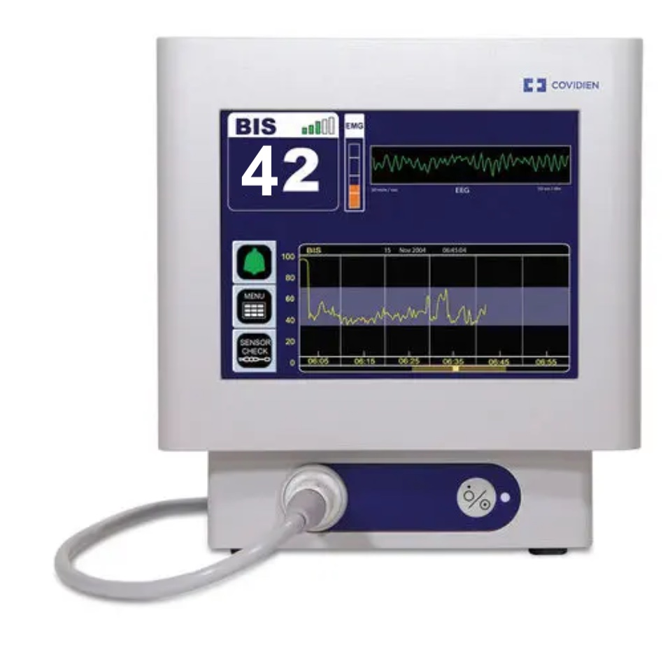 > "The Answer to the Ultimate Question of Life, The Universe, and Everything" --- <img data-src="images/window into the sole.jpg" alt="trephining" height="500"> ----- ## Objectives * Basic EEG physics / physiology * Raw EEG interpretation * BIS 3.5 display update * DSA * unexpected values * EEG pharmacology * The vunerable brain * Top tips ----- ## Why bother ? <img data-src="images/diathermy artifact.png" alt="diathermy artifact" height="500"> note: bis lag propriety algorithm treat the smae as all out other monitors: trace gives context to the value. ----- ## Basic Physics and Physiology 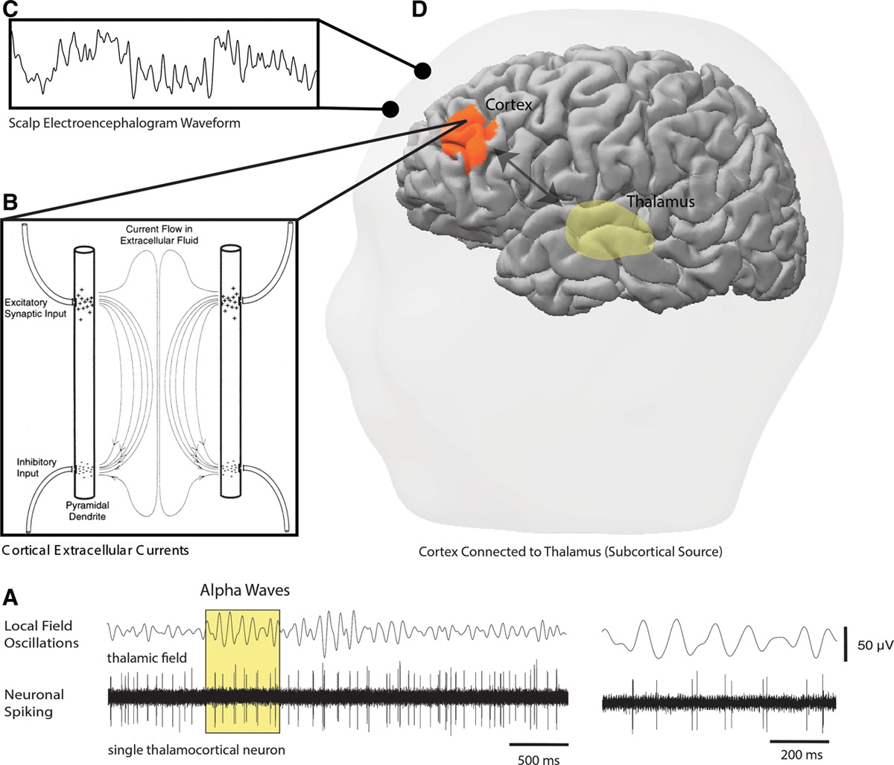 <!-- >Patrick L. Purdon, Aaron Sampson, Kara J. Pavone, Emery N. Brown Clinical Electroencephalography for Anesthesiologists: Part I: Background and Basic Signatures. Anesthesiology 2015; 123:937–960 doi: https://doi.org/10.1097/ALN.0000000000000841 --> note: * The EEG detects voltages of 1–500 µV. * Fourier analysis is used to separate the raw EEG into a number of component sine waves --- --- <img data-src="images/anterorisation of alpha.jpg" alt="dsa" height="500"> note: * thalamus is the gate keeper of all sensory modalities to the cortex (apart from smell) * usual oscialtions are very fast 30-50 Hz in the gamma band * anaesthetic agents slow the transmission right down to 10 Hz breaking the conduction of signals between the thalamus and the frontal cortex * Inhibiting thalmocortical transmission and intercortical transmission * Frontal conherance in spatially separated regions (supports thalamus as rthym generator) * Ultraslow TCI propofol inductions 45-60 mins. * Patients lose response to mechanical sound before an emotionally significant one c.f dropping the intruments tray. ----- ## How to "read" an EEG <img data-src="https://www.surfline.com/cdn-cgi/image/q=85,f=auto,fit=contain/https://d14fqx6aetz9ka.cloudfront.net/wp-content/uploads/2018/11/19125910/klein_nazare_portugal_nov2018_156841.jpg" alt="atlantic swell" height="500"> note: test --- 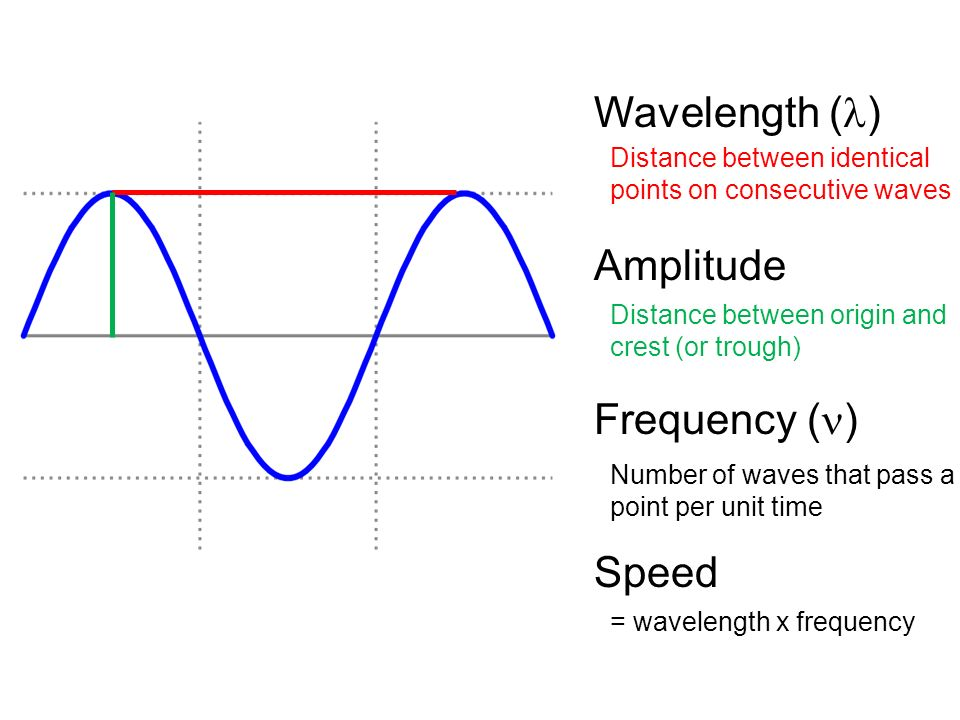 --- 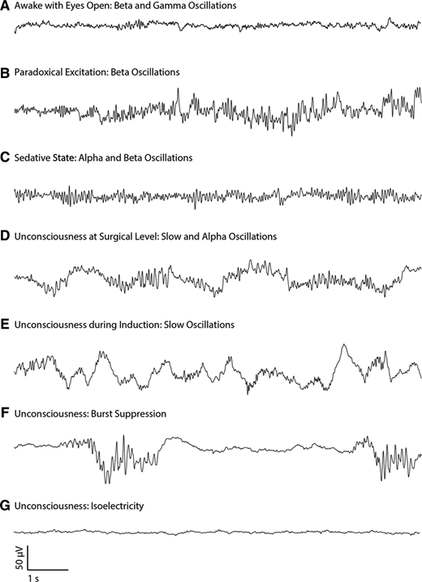 note: * awake:low amplitude, high frequency. Eye movements/blinking. Occasional high amplitude EMG * anaesthetised: higher amplitude, slower, more predictable * Overdose: switch mitochondria off and produce less ATP, burst supression ( in the context of anaesthesia is a pathological state). Isoelectric with no EEG potential followed by large bursts at the the thalamus trues to kick the waves. --- 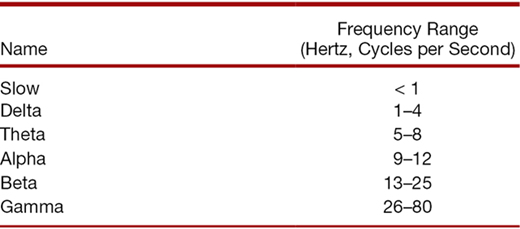 note: Phases * Beta activation: seen during gradual TIVA induction Increase in beta oscialtions purposeless or defence movements, incoherent speech, euphoria Amplitude higher EMG lower Reduction in EMG/blinks * Slow wave oscilations: Massive amplitude low frequency slow waves 0.5-1 Hz Associated with LOC Brainstem hit: thalamus. * Maintenance pattern: sharp 10 Hz alpha oscilations on top of and in phase with deta waves 1-4 Hz Large induction does of propofol may cause burst supression and it may take some time to form ----- # BIS 3.5 Display Update --- ## DSA 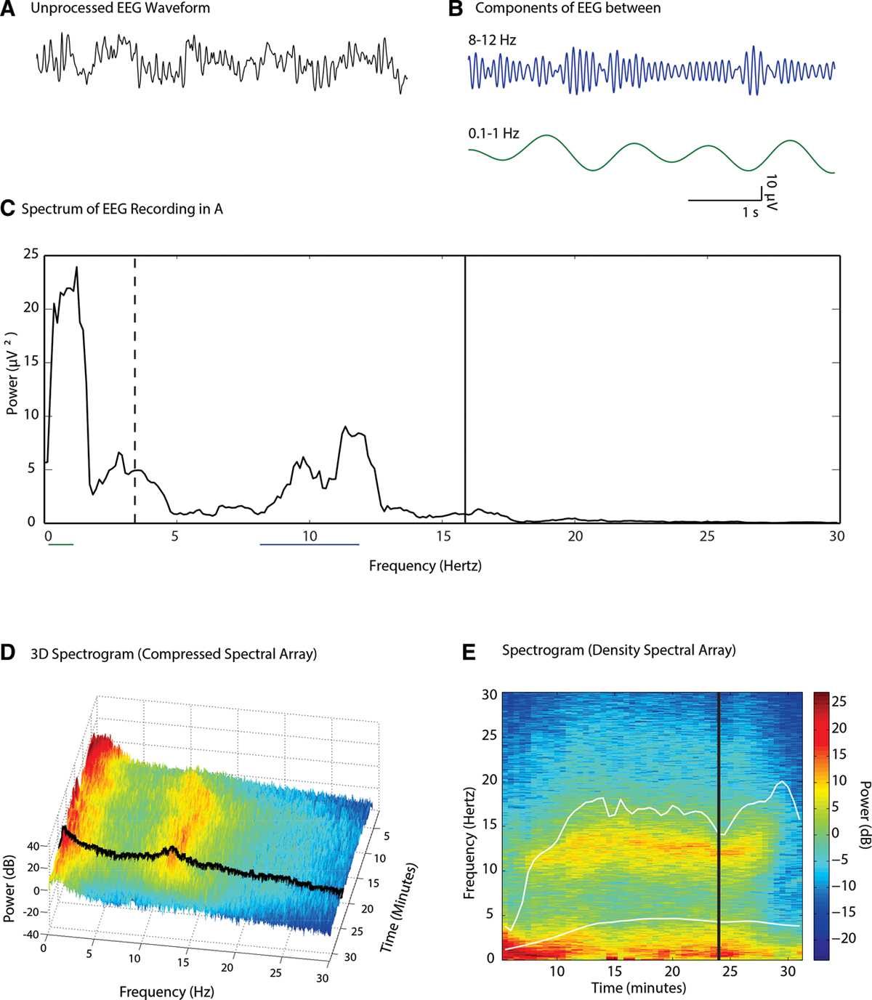 --- 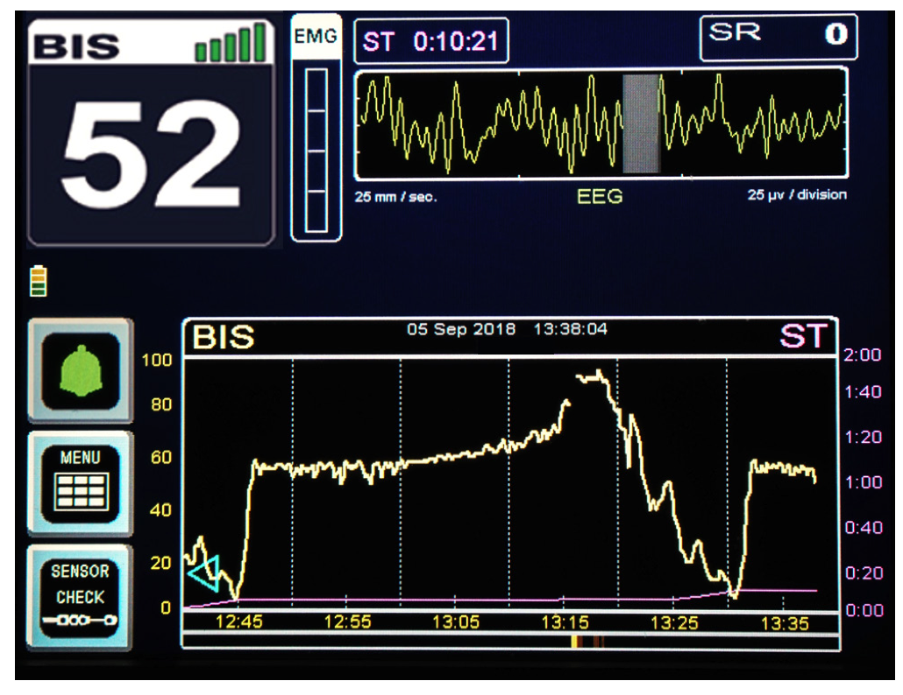 --- 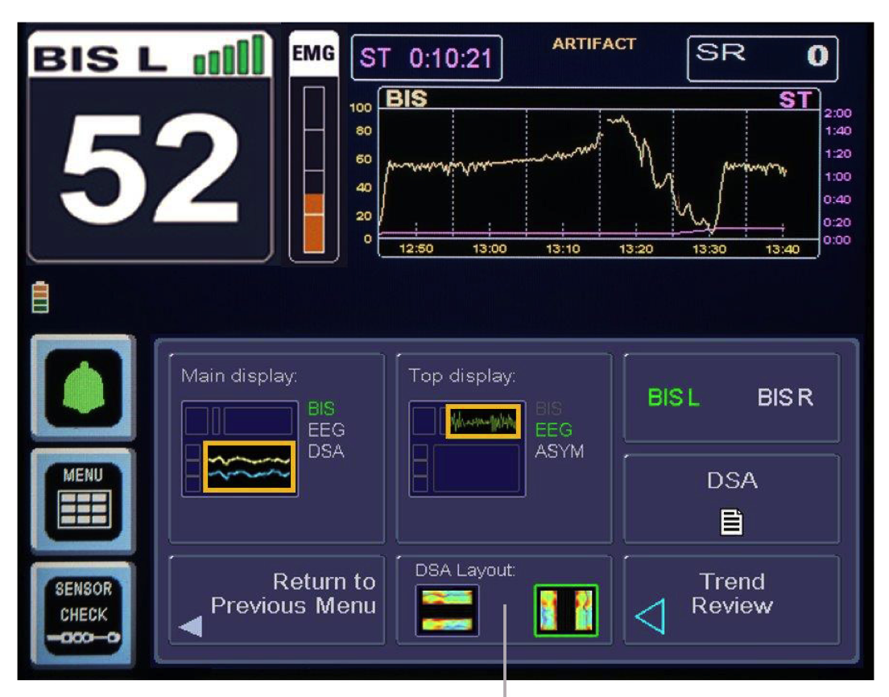 --- 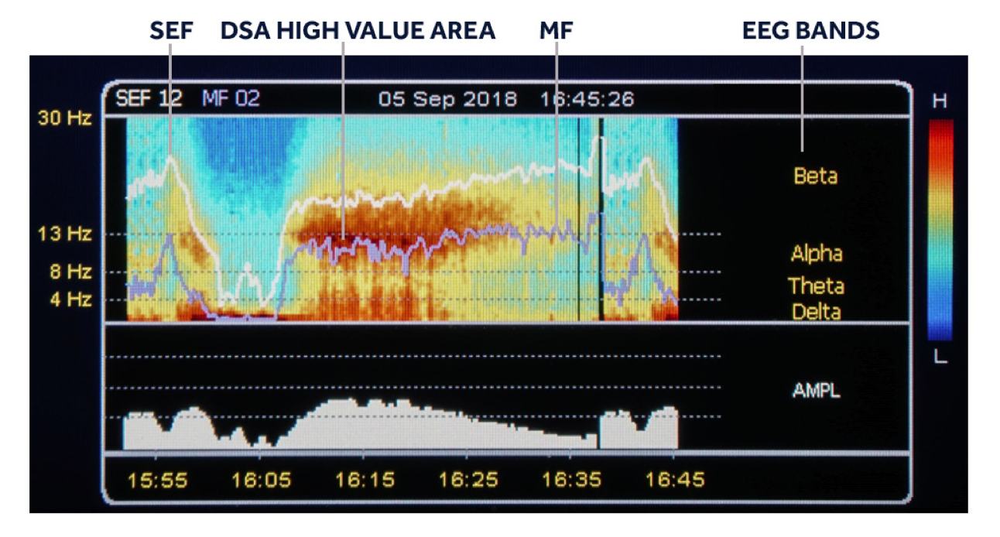 ----- ## EEG pharmacology <img data-src="https://upload.wikimedia.org/wikipedia/commons/thumb/8/89/Bandera_de_España.svg/1200px-Bandera_de_España.svg.png" alt="spain flag" height="500"> --- <img data-src="images/eeg_pharmacology.jpg" alt="dsa" height="500"> --- <img data-src="images/BIS_NWP_sevo.png" alt="dsa" height="500"> ----- ## Dealing with unexpected values ### Discordance 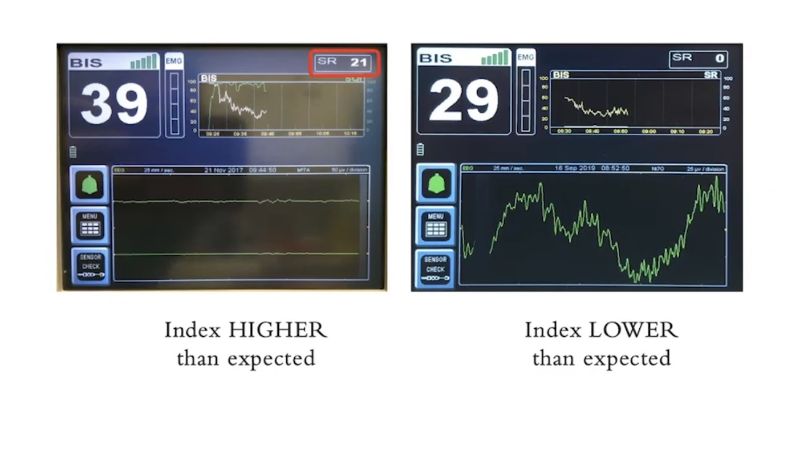 --- # EMG * tricky to deal with * is part of the BIS algorithm --- # Troubleshooting "propofol ping" * 3-4 ml propofol via the cannula * observe the eeg * check anaesthetic delivery, rational drug dose * ? change in surgical stimulus * artifacts in / on and around the brain. note: * re-assuring BIS number how * how the BIS algorhythm deals with burst supression * historically high amplitude bursts confused the BIS giving higher values than you would expect for deep burst supressed anaesthesia * supression ratio of < 40% doesnt affect the BIS index value * BIS number between 30-40 grey area * recommend looking at the SR and the EEG to decide whether the value is useful or not * Right hand panel oppopsite problem BIS number suggests the patient is a bit too deep. EEG and SR suggest otherwise. * BIS algorhythm has transition points in it. Due to SEF value (BIS has switched to an different algorhythm which can only produce lower values) ----- ## The Vunerable brain * Alpha power diminishes with age * The lower the alpha power the higher the chance of burst supression * Longer duration of burst supression correlates with post operative delerium. <!-- Punjasawadwong Y, Chau‐in W, Laopaiboon M, Punjasawadwong S, Pin‐on P. Processed electroencephalogram and evoked potential techniques for amelioration of postoperative delirium and cognitive dysfunction following non‐cardiac and non‐neurosurgical procedures in adults. Cochrane Database of Systematic Reviews 2018, Issue 5. Art. No.: CD011283. DOI: 10.1002/14651858.CD011283.pub2. Accessed 06 July 2021 --> --- <img data-src="images/the vunerable brain.png" alt="dsa" height="500"> --- <img data-src="images/cochrane forest plot POCD.png" alt="dsa" height="500"> --- 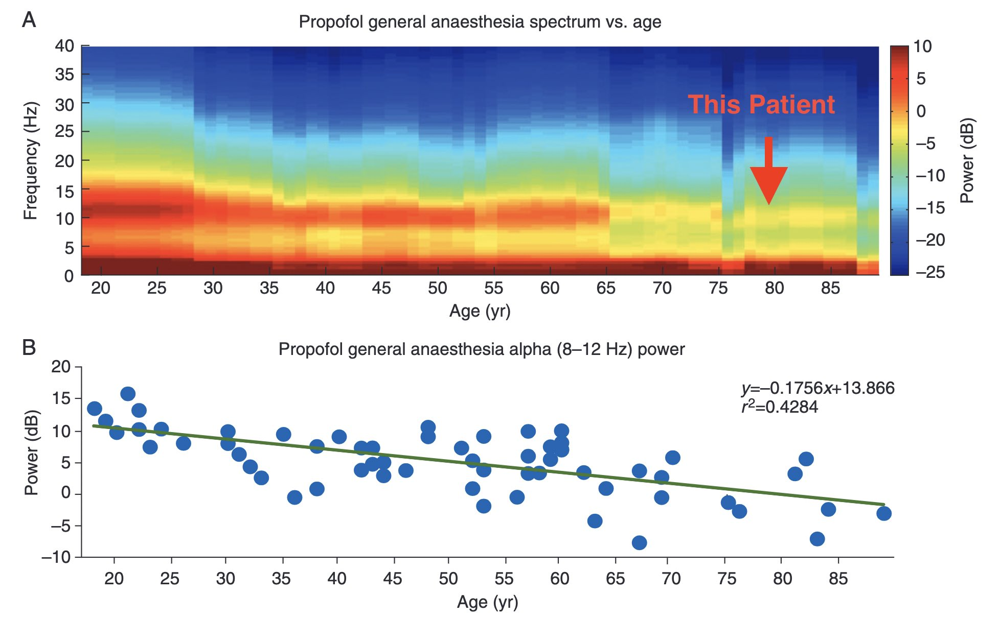 --- <img data-src="images/BIS_NWP_low_alpha.png" alt="dsa" height="500"> ----- # Top Tips * filters (operate at 2 Hz) * optimise the display view depending on phase of anesthesia * consider 2 channels * put the bis on awake pre-induction (appreciate the indexed baseline) ----- # Useful resources * http://eegforanesthesia.iars.org * Purdon PL, Sampson A, Pavone KJ, Brown EN. Clinical Electroencephalography for Anesthesiologists: Part I: Background and Basic Signatures. Anesthesiology. 2015;123(4):937-960. doi:10.1097/ALN.0000000000000841 ----- # credits 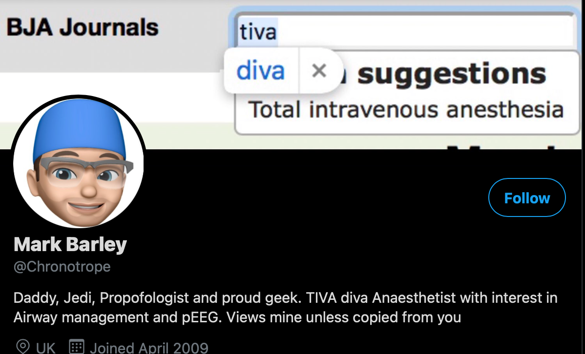 ----- # Questions ----- ## made with #### [reveal.js](https://github.com/hakimel/reveal.js)